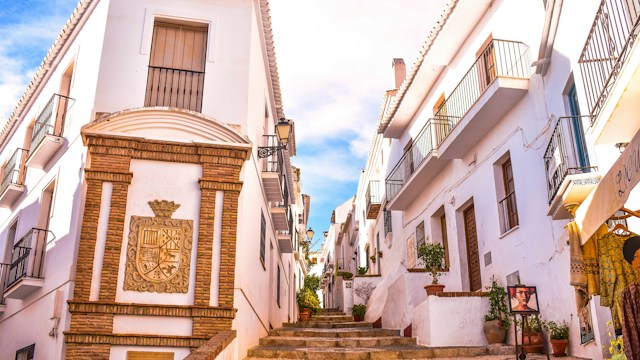

Frigiliana es un municipio y localidad española de la provincia de Málaga, en la comunidad autónoma de Andalucía. Se encuentra situado en la comarca de La Axarquía, la más oriental de la provincia, e integrado en el partido judicial de Torrox. Frigiliana fue el primer municipio de la Provincia de Málaga que obtuvo en el año 2015 la acreditación y pertenencia a la asociación Los Pueblos Más Bonitos de España.
